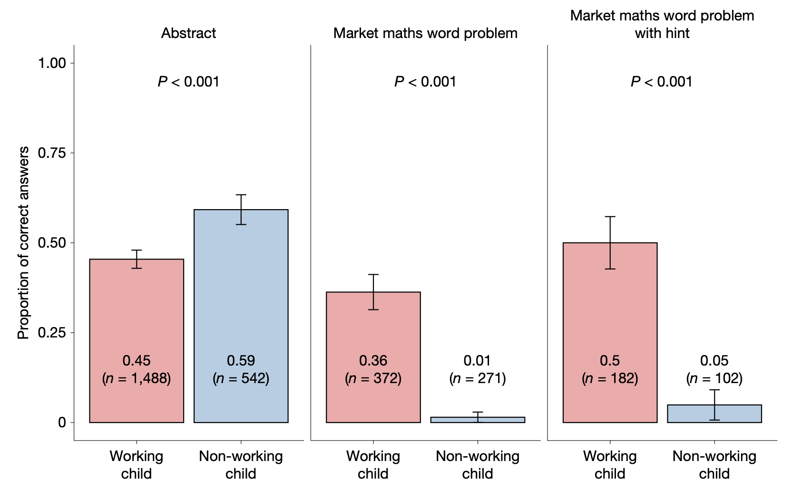
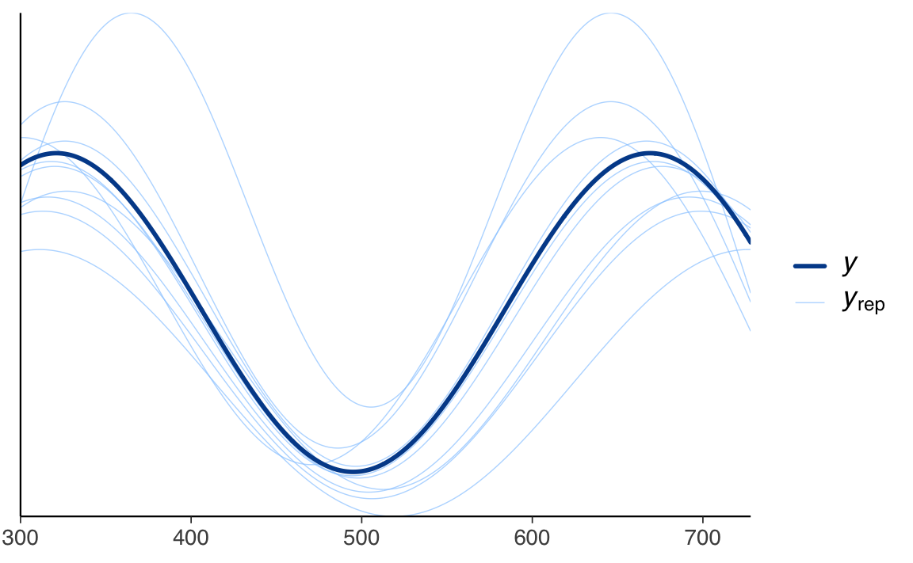

here::here("code", "_common.R") |>
source()
# Load packages
if (!requireNamespace("pacman")) install.packages("pacman")
pacman::p_load(brms, cmdstanr, posterior, brms, bayestestR, insight)69 Confronto tra due proporzioni indipendenti
In questo capitolo imparerai a
- condurre un confronto bayesiano tra le proporzioni di due gruppi indipendenti utilizzando la funzione
brm()del pacchetto brms.
Prerequisiti
- Leggere l’articolo “Children’s arithmetic skills do not transfer between applied and academic mathematics” (Banerjee et al., 2025).
Preparazione del Notebook
69.1 Introduzione
Spesso, ci troviamo ad affrontare la necessità di confrontare due gruppi di dati. Mentre nel capitolo precedente abbiamo considerato il contronto tra le medie di due gruppi indipendenti, nel caso presente ci concentreremo sul confronto tra le proporzioni di due gruppi indipendenti. Per esempio, potrebbe interessarci sapere se la proporzione di un gruppo è maggiore o diversa rispetto a quella di un altro gruppo. Come in precedenza, per effettuare tale confronto, è fondamentale utilizzare un modello statistico, poiché le vere differenze tra i gruppi sono spesso accompagnate da rumore di misurazione o fluttuazioni casuali del fenomeno in esame. Questo rende difficile trarre conclusioni basandosi unicamente sulle differenze calcolate dai dati osservati.
69.2 Confronto tra le proporzioni di due gruppi indipendenti
Anche nel caso delle proporzioni, il metodo tradizionale per confrontare statisticamente due o più gruppi consiste nell’utilizzare un test di ipotesi. Questo approccio prevede la definizione di un’ipotesi nulla, che tipicamente afferma l’assenza di differenze tra i gruppi, e l’uso di una statistica test per valutare se i dati osservati sono compatibili con tale ipotesi. Se la statistica test supera una soglia prestabilita, l’ipotesi nulla viene rifiutata, suggerendo che esiste una differenza significativa tra i gruppi.
Tuttavia, i test di ipotesi presentano alcune criticità. Innanzitutto, possono risultare complessi da applicare e interpretare, e i loro risultati sono spesso soggetti a errori di valutazione. La scelta delle specifiche del test statistico—quale test utilizzare, quale ipotesi nulla formulare, quale livello di significatività adottare—è spesso basata su convenzioni piuttosto che sulle peculiarità del problema analizzato o sulle decisioni da prendere (Johnson, 1999). Inoltre, i risultati dei test di ipotesi sono spesso indiretti e incompleti, e tendono a sovrastimare le evidenze contro l’ipotesi nulla (Goodman, 1999).
Un approccio alternativo e più informativo è quello basato sulla stima anziché sul test dell’ipotesi nulla, fondato sulla probabilità bayesiana piuttosto che su quella frequentista. In questo caso, l’obiettivo non è semplicemente verificare se esiste una differenza tra i gruppi, ma stimare quanto siano effettivamente diversi. Questo metodo è intrinsecamente più informativo, poiché fornisce una stima diretta della differenza tra i gruppi, accompagnata da una misura dell’incertezza associata. Tale incertezza riflette sia la nostra limitata conoscenza dei parametri del modello (incertezza epistemica) sia la variabilità intrinseca del sistema (incertezza aleatoria).
In sintesi, mentre i test di ipotesi si concentrano sul rigetto o meno di un’ipotesi nulla, l’approccio basato sulla stima offre una visione più completa e utile, permettendo di quantificare direttamente la differenza tra i gruppi e di valutare l’incertezza associata a tale stima. Questo rende l’analisi più adatta a supportare decisioni informate e basate sui dati.
Per affrontare tale problema possiamo usare un modello di regressione. In questo caso, anziché calcolare direttamente la differenza tra le proporzioni, si introduce una variabile indicatrice (o “dummy”) \(D\) nel modello di regressione, come segue:
\[ y_i \sim \text{Bernoulli}(p_i), \\ \text{logit}(p_i) = \alpha + \gamma D_i. \]
La variabile indicatrice \(D\) specifica l’appartenenza ai gruppi attraverso valori binari: 0 per il gruppo di riferimento e 1 per il gruppo di confronto, definita come:
\[ D_i = \begin{cases} 0 & \text{se l'osservazione } i \text{ appartiene al gruppo 0,} \\ 1 & \text{se l'osservazione } i \text{ appartiene al gruppo 1.} \end{cases} \]
Entrambi i metodi sono appropriati per studiare la differenza tra le proporzioni di due gruppi indipendenti. Tuttavia, il modello di regressione offre maggiore flessibilità e possibilità di estensione. Questa metodologia consente di includere ulteriori variabili esplicative, migliorando la comprensione dei fattori che influenzano l’esito di interesse. Tale flessibilità diventa particolarmente utile per esplorare come altre variabili incidano sulla differenza tra le proporzioni o per analizzare contemporaneamente più variabili.
69.3 Regressione bayesiana per due gruppi indipendenti
In un approccio bayesiano, possiamo utilizzare un modello di regressione per confrontare le proporzioni di due gruppi indipendenti. Tuttavia, poiché stiamo lavorando con dati binari (ad esempio, successo/fallimento, sì/no), la distribuzione di riferimento non è più la normale (gaussiana), come nel caso delle medie, ma la distribuzione di Bernoulli. Questo significa che ogni osservazione \(y_i\) può assumere solo due valori: 0 (fallimento) o 1 (successo), e la probabilità di successo è indicata con \(p_i\).
Il modello di regressione può essere espresso come:
\[ \begin{align*} y_i & \sim \text{Bernoulli}(p_i), \\ \text{logit}(p_i) & = \alpha + \gamma D_i. \end{align*} \]
69.3.1 Cosa significa “logit”?
Il logit è una trasformazione matematica che ci permette di lavorare con probabilità (che sono limitate tra 0 e 1) nel contesto di un modello lineare. In particolare, il logit di una probabilità \(p_i\) è definito come:
\[ \text{logit}(p_i) = \log\left(\frac{p_i}{1 - p_i}\right). \]
Questa trasformazione ha due vantaggi principali:
Trasforma l’intervallo [0, 1] in \((-\infty, +\infty)\): mentre una probabilità \(p_i\) è confinata tra 0 e 1, il logit può assumere qualsiasi valore reale. Questo è fondamentale perché i modelli lineari (come quello che stiamo usando) funzionano meglio quando la variabile dipendente non ha limiti.
Interpretazione come “log-odds”: il termine \(\frac{p_i}{1 - p_i}\) è chiamato odds (rapporto tra la probabilità di successo e quella di fallimento). Prendendo il logaritmo, otteniamo il log-odds, che è più facile da gestire in un modello lineare.
69.3.2 Componenti del modello
Nel modello di regressione:
- \(y_i \sim \text{Bernoulli}(p_i)\): indica che ogni osservazione \(y_i\) segue una distribuzione di Bernoulli con probabilità di successo \(p_i\).
- \(\text{logit}(p_i) = \alpha + \gamma D_i\): è l’equazione lineare che collega la probabilità di successo \(p_i\) alla variabile indicatrice \(D_i\), che rappresenta l’appartenenza al gruppo.
69.3.2.1 Parametri del modello
\(\alpha\): rappresenta l’intercetta, ovvero il logit della probabilità di successo per il gruppo di riferimento (\(D = 0\)). Per ottenere la probabilità \(p\) corrispondente, possiamo applicare la funzione inversa del logit, chiamata funzione logistica: \[ p = \frac{e^\alpha}{1 + e^\alpha}. \]
\(\gamma\): rappresenta la differenza nel logit delle probabilità tra il gruppo di confronto (\(D = 1\)) e il gruppo di riferimento (\(D = 0\)). In altre parole, \(\gamma\) quantifica quanto il logit della probabilità di successo del gruppo 1 si discosta da quello del gruppo 0.
69.3.3 Interpretazione per i due gruppi
Gruppo di riferimento (\(D = 0\)): \[ \text{logit}(p_i) = \alpha. \] Qui, \(\alpha\) rappresenta direttamente il logit della probabilità di successo per il gruppo 0.
Gruppo di confronto (\(D = 1\)): \[ \text{logit}(p_i) = \alpha + \gamma. \] In questo caso, \(\alpha + \gamma\) rappresenta il logit della probabilità di successo per il gruppo 1. La differenza tra i due gruppi è quindi catturata dal parametro \(\gamma\).
69.3.4 Inferenza bayesiana
In un contesto bayesiano, l’obiettivo è stimare la distribuzione a posteriori dei parametri \(\alpha\) e \(\gamma\), che ci fornisce informazioni sulla probabilità di successo nei due gruppi e sulla differenza tra di essi. In particolare, ci interessa la distribuzione a posteriori di \(\gamma\), che ci permette di valutare quanto sia plausibile che ci sia una differenza degna di nota tra i due gruppi e di quantificare l’incertezza associata a questa stima.
69.3.5 Perché usare il logit?
La scelta di modellare il logit della probabilità, anziché la probabilità stessa, è dettata dalla necessità di adattare un modello lineare a dati binari. Mentre una probabilità è limitata tra 0 e 1, il logit può assumere qualsiasi valore reale, rendendolo compatibile con la struttura del modello lineare. Senza questa trasformazione, non potremmo utilizzare un modello lineare per analizzare dati binari, poiché le previsioni del modello potrebbero cadere al di fuori dell’intervallo [0, 1], il che non avrebbe senso per una probabilità.
In sintesi, il logit ci permette di “aprire” l’intervallo [0, 1] e di utilizzare un modello lineare per analizzare dati binari, mantenendo al contempo un’interpretazione chiara e intuitiva dei risultati.
69.4 Approccio Frequentista
L’inferenza frequentista si basa sulla costruzione della distribuzione campionaria di una statistica di interesse. Nel caso presente, la statistica di interesse è la differenza tra le proporzioni di due gruppi indipendenti. Supponiamo che i dati provengano da due popolazioni distribuite come Bernoulli:
\[ Y_1 \sim \text{Bernoulli}(p_1) \quad \text{e} \quad Y_2 \sim \text{Bernoulli}(p_2), \]
dove \(p_1\) e \(p_2\) sono le proporzioni delle popolazioni.
69.4.1 Inferenza sulla differenza delle proporzioni
Siamo interessati a fare inferenza sulla differenza \(p_1 - p_2\). La statistica campionaria corrispondente è la differenza tra le proporzioni campionarie:
\[ \hat{p}_1 - \hat{p}_2. \]
Per fare inferenza, dobbiamo determinare la distribuzione di \(\hat{p}_1 - \hat{p}_2\) nell’universo dei campioni.
69.4.1.1 Valore atteso
Il valore atteso della differenza tra le proporzioni campionarie è:
\[ E(\hat{p}_1 - \hat{p}_2) = E(\hat{p}_1) - E(\hat{p}_2) = p_1 - p_2. \]
69.4.1.2 Varianza
La varianza della differenza tra le proporzioni campionarie dipende dall’indipendenza dei due campioni. Se \(\hat{p}_1\) e \(\hat{p}_2\) sono indipendenti, la covarianza tra di essi è zero, e la varianza è data da:
\[ \begin{align} V(\hat{p}_1 - \hat{p}_2) &= V(\hat{p}_1) + V(\hat{p}_2) - 2 \text{Cov}(\hat{p}_1, \hat{p}_2) \\ &= V(\hat{p}_1) + V(\hat{p}_2) \quad \text{(poiché $\text{Cov}(\hat{p}_1, \hat{p}_2) = 0$)} \\ &= \frac{p_1(1 - p_1)}{n_1} + \frac{p_2(1 - p_2)}{n_2}, \end{align} \]
dove:
- \(p_1\) e \(p_2\) sono le proporzioni delle popolazioni da cui sono estratti i campioni,
- \(n_1\) e \(n_2\) sono le dimensioni dei campioni \(\hat{p}_1\) e \(\hat{p}_2\).
69.4.2 Distribuzione della statistica
Per due campioni indipendenti provenienti da popolazioni Bernoulli, la statistica \(\hat{p}_1 - \hat{p}_2\) segue una distribuzione normale approssimata:
\[ \hat{p}_1 - \hat{p}_2 \sim \mathcal{N}\left(p_1 - p_2, \sqrt{\frac{p_1(1 - p_1)}{n_1} + \frac{p_2(1 - p_2)}{n_2}}\right). \]
Questo risultato è fondamentale per costruire test di ipotesi e intervalli di confidenza sulla differenza delle proporzioni. Questi argomenti verranno approfonditi in seguito. Per ora, limitiamoci a costruire la distribuzione campionaria della statistica \(\hat{p}_1 - \hat{p}_2\) e a calcolare delle probabilità.
69.5 Un esempio illustrativo
Consideriamo i dati di un recente studio di Banerjee et al. (2025) sui bambini provenienti da contesti socioeconomici svantaggiati. Lo studio si è concentrato sulle competenze matematiche di bambini che lavorano nei mercati di Kolkata e Delhi, in India, confrontandole con quelle di bambini che frequentano la scuola ma non hanno esperienza di lavoro. L’obiettivo era capire se le abilità matematiche apprese in contesti reali, come il mercato, possano trasferirsi in ambito scolastico e viceversa.
I risultati principali dello studio sono i seguenti.
Bambini che lavorano nei mercati (n = 1.436): Quasi tutti questi bambini dimostravano di saper eseguire calcoli aritmetici complessi nel contesto lavorativo. Erano abili nel risolvere problemi matematici legati a situazioni concrete, come quelle che incontrano quotidianamente al mercato. Tuttavia, quando gli stessi problemi venivano presentati in formato astratto, tipico dei libri di scuola, le loro performance peggioravano notevolmente. Questo suggerisce che le loro abilità matematiche sono fortemente legate al contesto pratico in cui le hanno apprese.
Bambini che frequentano la scuola (n = 471): Al contrario, i bambini senza esperienza di lavoro nei mercati mostravano una buona capacità di risolvere problemi matematici semplici e astratti, ma solo l’1% di loro riusciva a risolvere correttamente un problema applicato al contesto del mercato, che invece era risolto da più di un terzo dei bambini lavoratori. Inoltre, i bambini scolarizzati utilizzavano metodi di calcolo scritto inefficienti, faticavano a combinare diverse operazioni e impiegavano troppo tempo per arrivare a una soluzione, rendendo le loro abilità poco utili in situazioni reali o in matematica avanzata.
Lo studio evidenzia un contrasto netto tra le abilità matematiche dei due gruppi:
- i bambini lavoratori eccellono in problemi concreti ma faticano con quelli astratti;
- i bambini scolari sono più abili con problemi astratti ma mostrano difficoltà nel trasferire queste competenze in contesti pratici.
Questo risultato è chiaro nei dati dello studio 3, illustrato dalla Figura 4 dell’articolo.

Questi dati offrono un caso pratico per applicare modelli statistici che confrontano le proporzioni di successo tra due gruppi indipendenti. Nel caso presente, siamo interessati a stimare la differenza nella probabilità di risolvere correttamente un problema matematico tra i bambini lavoratori e quelli scolari. Utilizzando un approccio bayesiano, come descritto in precedenza, possiamo non solo quantificare questa differenza, ma anche valutare l’incertezza associata alla stima, fornendo così una base solida per interpretare i risultati e trarre conclusioni.
Ci focalizzeremo sui pannelli di sinistra e centrale della figura per analizzare i risultati.
Per quanto riguarda i problemi astratti, le prestazioni sono state le seguenti:
- I bambini lavoratori hanno ottenuto 670 successi su 1488 prove, corrispondenti a una proporzione di successo \(p = 0.45\).
- I bambini scolarizzati hanno raggiunto 320 successi su 542 prove, con una proporzione di successo \(p = 0.59\).
Invece, per i problemi matematici di mercato, i risultati sono stati:
- I bambini lavoratori hanno registrato 134 successi su 373 prove, con una proporzione di successo \(p = 0.36\).
- I bambini scolarizzati hanno ottenuto solo 3 successi su 271 prove, equivalente a una proporzione di successo \(p = 0.01\).
Questa distribuzione evidenzia notevoli differenze nelle prestazioni tra i due gruppi nei diversi tipi di problemi.
69.6 Parallelo tra approccio frequentista e bayesiano
Il confronto tra le proporzioni di due gruppi indipendenti può essere affrontato sia con un approccio frequentista, basato sulla distribuzione campionaria, sia con un approccio bayesiano, basato sull’aggiornamento delle credenze a posteriori. Vediamo i due approcci in dettaglio.
69.6.1 Approccio Frequentista
L’inferenza frequentista per il confronto tra due proporzioni si basa sulla distribuzione campionaria della differenza tra le proporzioni dei due gruppi. Supponiamo che i dati provengano da due campioni indipendenti di dimensioni \(n_1\) e \(n_2\), con proporzioni di successo \(p_1\) e \(p_2\), rispettivamente.
La differenza tra le proporzioni campionarie, \(\hat{p}_1 - \hat{p}_2\), segue una distribuzione approssimativamente normale, soprattutto quando le dimensioni dei campioni sono sufficientemente grandi (in genere, quando \(n_1 p_1\), \(n_1 (1 - p_1)\), \(n_2 p_2\) e \(n_2 (1 - p_2)\) sono tutti maggiori di 5). Questa approssimazione è basata sul Teorema del Limite Centrale, che garantisce che la distribuzione della differenza tra le proporzioni campionarie tende a una distribuzione normale al crescere della dimensione del campione.
69.6.1.1 Distribuzione della differenza tra proporzioni
La differenza \(\hat{p}_1 - \hat{p}_2\) ha una distribuzione normale con:
Valore atteso: \[ E(\hat{p}_1 - \hat{p}_2) = p_1 - p_2. \] Questo significa che, in media, la differenza osservata tra le proporzioni campionarie riflette la differenza vera tra le proporzioni delle popolazioni.
Varianza: \[ V(\hat{p}_1 - \hat{p}_2) = \frac{p_1 (1 - p_1)}{n_1} + \frac{p_2 (1 - p_2)}{n_2}. \] La varianza della differenza dipende dalle proporzioni delle popolazioni e dalle dimensioni dei campioni. Maggiore è la dimensione del campione, minore è la varianza e quindi più precisa è la stima della differenza.
69.6.1.2 Stima della varianza
Poiché le proporzioni delle popolazioni \(p_1\) e \(p_2\) sono generalmente sconosciute, utilizziamo le proporzioni campionarie \(\hat{p}_1\) e \(\hat{p}_2\) per stimare la varianza:
\[ V(\hat{p}_1 - \hat{p}_2) \approx \frac{\hat{p}_1 (1 - \hat{p}_1)}{n_1} + \frac{\hat{p}_2 (1 - \hat{p}_2)}{n_2}. \]
69.6.1.3 Intervallo di confidenza
Un intervallo di confidenza per la differenza tra le proporzioni \(p_1 - p_2\) può essere costruito utilizzando la distribuzione normale approssimata. L’intervallo di confidenza al 95% è dato da:
\[ (\hat{p}_1 - \hat{p}_2) \pm z \cdot \sqrt{\frac{\hat{p}_1 (1 - \hat{p}_1)}{n_1} + \frac{\hat{p}_2 (1 - \hat{p}_2)}{n_2}}, \]
dove \(z\) è il valore critico della distribuzione normale standard (ad esempio, 1.96 per un intervallo di confidenza al 95%).
69.6.1.4 Test di ipotesi
Per testare l’ipotesi nulla \(H_0: p_1 = p_2\) (cioè che non c’è differenza tra le proporzioni dei due gruppi), possiamo utilizzare una statistica test basata sulla differenza standardizzata tra le proporzioni campionarie:
\[ Z = \frac{\hat{p}_1 - \hat{p}_2}{\sqrt{\hat{p} (1 - \hat{p}) \left( \frac{1}{n_1} + \frac{1}{n_2} \right)}}, \]
dove \(\hat{p}\) è la proporzione pooled, calcolata come:
\[ \hat{p} = \frac{n_1 \hat{p}_1 + n_2 \hat{p}_2}{n_1 + n_2}. \]
La statistica \(Z\) segue una distribuzione normale standard sotto l’ipotesi nulla. Se il valore assoluto di \(Z\) supera il valore critico (ad esempio, 1.96 per un livello di significatività del 5%), rifiutiamo l’ipotesi nulla e concludiamo che c’è una differenza significativa tra le proporzioni dei due gruppi.
69.6.2 Vantaggi e limiti dell’approccio frequentista
-
Vantaggi:
- È un metodo ben consolidato e ampiamente utilizzato.
- Fornisce risultati chiari e immediati, come intervalli di confidenza e p-value.
- È relativamente semplice da applicare, soprattutto con software statistici.
-
Limiti:
- L’approssimazione normale funziona bene solo con campioni sufficientemente grandi. Per campioni piccoli o proporzioni vicine a 0 o 1, potrebbero essere necessari metodi alternativi.
- L’interpretazione dei p-value può essere fuorviante, soprattutto se non si considera l’effetto della dimensione del campione.
- Non fornisce una stima diretta della probabilità che l’ipotesi nulla sia vera, ma solo una misura di quanto i dati siano compatibili con essa.
In sintesi, l’approccio frequentista offre un metodo robusto e intuitivo per confrontare due proporzioni, ma richiede attenzione alle condizioni di applicabilità e alla corretta interpretazione dei risultati.
69.6.3 Esempio Pratico
Per applicare l’approccio frequentista ai dati forniti, possiamo utilizzare un test di proporzioni per confrontare le proporzioni di successo tra i bambini lavoratori e i bambini scolarizzati, sia per i problemi astratti che per i problemi matematici di mercato. L’approccio frequentista si basa sull’uso di dati osservati per fare inferenze statistiche, e in questo caso, utilizzeremo un test z per proporzioni.
69.6.4 1. Confronto per i problemi astratti
Ipotesi:
- \(H_0\): Non c’è differenza tra le proporzioni di successo dei bambini lavoratori e dei bambini scolarizzati (\(p_{\text{lavoratori}} = p_{\text{scolarizzati}}\)).
- \(H_1\): C’è una differenza tra le proporzioni di successo (\(p_{\text{lavoratori}} \neq p_{\text{scolarizzati}}\)).
Dati:
- Bambini lavoratori: 670 successi su 1488 prove, \(p_{\text{lavoratori}} = 0.45\).
- Bambini scolarizzati: 320 successi su 542 prove, \(p_{\text{scolarizzati}} = 0.59\).
Calcolo della statistica z:
La statistica z per il confronto di due proporzioni è data da:
\[ z = \frac{p_1 - p_2}{\sqrt{p(1 - p) \left( \frac{1}{n_1} + \frac{1}{n_2} \right)}} \]
dove \(p\) è la proporzione complessiva di successi:
\[ p = \frac{X_1 + X_2}{n_1 + n_2} = \frac{670 + 320}{1488 + 542} = \frac{990}{2030} \approx 0.487 \]
Ora calcoliamo la statistica z:
\[ z = \frac{0.45 - 0.59}{\sqrt{0.487 \times (1 - 0.487) \times \left( \frac{1}{1488} + \frac{1}{542} \right)}} \]
\[ z = \frac{-0.14}{\sqrt{0.487 \times 0.513 \times \left( \frac{1}{1488} + \frac{1}{542} \right)}} \]
\[ z = \frac{-0.14}{\sqrt{0.487 \times 0.513 \times (0.000672 + 0.001845)}} \]
\[ z = \frac{-0.14}{\sqrt{0.487 \times 0.513 \times 0.002517}} \]
\[ z = \frac{-0.14}{\sqrt{0.000629}} \]
\[ z = \frac{-0.14}{0.0251} \approx -5.58 \]
Conclusione: Il valore di z è -5.58, che corrisponde a un p-value molto piccolo (inferiore a 0.0001). Pertanto, rifiutiamo l’ipotesi nulla \(H_0\) e concludiamo che c’è una differenza statisticamente significativa tra le proporzioni di successo dei bambini lavoratori e dei bambini scolarizzati nei problemi astratti.
69.6.5 2. Confronto per i problemi matematici di mercato
Ipotesi:
- \(H_0\): Non c’è differenza tra le proporzioni di successo dei bambini lavoratori e dei bambini scolarizzati (\(p_{\text{lavoratori}} = p_{\text{scolarizzati}}\)).
- \(H_1\): C’è una differenza tra le proporzioni di successo (\(p_{\text{lavoratori}} \neq p_{\text{scolarizzati}}\)).
Dati:
- Bambini lavoratori: 134 successi su 373 prove, \(p_{\text{lavoratori}} = 0.36\).
- Bambini scolarizzati: 3 successi su 271 prove, \(p_{\text{scolarizzati}} = 0.01\).
Calcolo della statistica z:
La proporzione complessiva di successi è:
\[ p = \frac{134 + 3}{373 + 271} = \frac{137}{644} \approx 0.213 \]
Ora calcoliamo la statistica z:
\[ z = \frac{0.36 - 0.01}{\sqrt{0.213 \times (1 - 0.213) \times \left( \frac{1}{373} + \frac{1}{271} \right)}} \]
\[ z = \frac{0.35}{\sqrt{0.213 \times 0.787 \times \left( \frac{1}{373} + \frac{1}{271} \right)}} \]
\[ z = \frac{0.35}{\sqrt{0.213 \times 0.787 \times (0.002681 + 0.00369)}} \]
\[ z = \frac{0.35}{\sqrt{0.213 \times 0.787 \times 0.006371}} \]
\[ z = \frac{0.35}{\sqrt{0.001067}} \]
\[ z = \frac{0.35}{0.0327} \approx 10.70 \]
Conclusione: Il valore di z è 10.70, che corrisponde a un p-value molto piccolo (inferiore a 0.0001). Pertanto, rifiutiamo l’ipotesi nulla \(H_0\) e concludiamo che c’è una differenza statisticamente significativa tra le proporzioni di successo dei bambini lavoratori e dei bambini scolarizzati nei problemi matematici di mercato.
69.6.6 Riassunto:
- Problemi astratti: C’è una differenza significativa tra le proporzioni di successo dei bambini lavoratori e dei bambini scolarizzati (z = -5.58, p < 0.0001).
- Problemi matematici di mercato: C’è una differenza significativa tra le proporzioni di successo dei bambini lavoratori e dei bambini scolarizzati (z = 10.70, p < 0.0001).
In entrambi i casi, i bambini scolarizzati hanno una proporzione di successo significativamente diversa rispetto ai bambini lavoratori.
69.6.7 Svolgimento con R
Di seguito mostriamo due modalità per replicare i calcoli in R: (1) passo passo usando le formule manuali, (2) usando la funzione prop.test() di R. Verranno illustrate entrambe le analisi: quella per i problemi astratti e quella per i problemi matematici di mercato.
69.6.7.1 Problemi astratti
Dati
- Bambini lavoratori (gruppo 1): 670 successi su 1488 prove.
- Bambini scolarizzati (gruppo 2): 320 successi su 542 prove.
# Dati
X1 <- 670
n1 <- 1488
X2 <- 320
n2 <- 542
# Proporzioni campionarie
p1 <- X1 / n1
p2 <- X2 / n2
# Proporzione pooled (combinata)
p_pool <- (X1 + X2) / (n1 + n2)
# Differenza fra le proporzioni
diff_p <- p1 - p2
# Calcolo della varianza della differenza (usando la formula per due proporzioni)
var_diff <- p_pool * (1 - p_pool) * (1/n1 + 1/n2)
# Deviazione standard della differenza
sd_diff <- sqrt(var_diff)
# Statistica z
z_value <- diff_p / sd_diff
# p-value (test a due code)
p_value <- 2 * pnorm(abs(z_value), lower.tail = FALSE)
# Visualizzazione risultati
z_value
#> [1] -5.588
p_value
#> [1] 2.295e-08Spiegazione passaggi chiave:
- Calcoliamo le proporzioni empiriche: \(p_1 = X_1 / n_1\), \(p_2 = X_2 / n_2\).
- Calcoliamo la proporzione “pooled”: \(p_{\mathrm{pool}} = \frac{X_1 + X_2}{n_1 + n_2}\).
- Calcoliamo la differenza delle proporzioni: \(\Delta p = p_1 - p_2\).
- Calcoliamo la varianza (approssimata) della differenza, usando \(p_{\mathrm{pool}}\) per lo stimatore comune.
- Otteniamo la statistica \(z\) come \(\frac{\Delta p}{\text{deviazione standard}}\).
- Il p-value (a due code) si ottiene come \(2 \times P(Z > |z|)\), con
pnormche fornisce la distribuzione cumulativa della normale.
69.6.7.2 Analisi con funzione prop.test()
Per ottenere direttamente il test di confronto di due proporzioni, possiamo usare la funzione prop.test di R. Attenzione che, di default, prop.test effettua una correzione per la continuità (Yates), che in questo contesto di solito disattiviamo per confrontare i risultati con i calcoli manuali (impostando correct = FALSE).
# Confronto due proporzioni senza correzione per la continuità
test_astratti <- prop.test(
x = c(X1, X2),
n = c(n1, n2),
alternative = "two.sided",
correct = FALSE
)
test_astratti
#>
#> 2-sample test for equality of proportions without continuity
#> correction
#>
#> data: c(X1, X2) out of c(n1, n2)
#> X-squared = 31, df = 1, p-value = 2e-08
#> alternative hypothesis: two.sided
#> 95 percent confidence interval:
#> -0.18864 -0.09163
#> sample estimates:
#> prop 1 prop 2
#> 0.4503 0.5904Il risultato fornirà:
- Statistica di test (approx. z).
- p-value.
- Stima delle due proporzioni e dell’intervallo di confidenza della loro differenza.
69.6.7.3 Problemi matematici di mercato
# Dati
X1_m <- 134
n1_m <- 373
X2_m <- 3
n2_m <- 271
# Proporzioni campionarie
p1_m <- X1_m / n1_m
p2_m <- X2_m / n2_m
# Proporzione pooled
p_pool_m <- (X1_m + X2_m) / (n1_m + n2_m)
# Differenza di proporzioni
diff_p_m <- p1_m - p2_m
# Varianza della differenza (usando la proporzione pooled)
var_diff_m <- p_pool_m * (1 - p_pool_m) * (1/n1_m + 1/n2_m)
# Deviazione standard
sd_diff_m <- sqrt(var_diff_m)
# Statistica z
z_value_m <- diff_p_m / sd_diff_m
# p-value (test a due code)
p_value_m <- 2 * pnorm(abs(z_value_m), lower.tail = FALSE)
# Visualizzazione risultati
z_value_m
#> [1] 10.66
p_value_m
#> [1] 1.581e-26Analogamente a quanto fatto per i problemi astratti:
# Confronto due proporzioni
test_mercato <- prop.test(
x = c(X1_m, X2_m),
n = c(n1_m, n2_m),
alternative = "two.sided",
correct = FALSE
)
test_mercato
#>
#> 2-sample test for equality of proportions without continuity
#> correction
#>
#> data: c(X1_m, X2_m) out of c(n1_m, n2_m)
#> X-squared = 114, df = 1, p-value <2e-16
#> alternative hypothesis: two.sided
#> 95 percent confidence interval:
#> 0.2979 0.3984
#> sample estimates:
#> prop 1 prop 2
#> 0.35925 0.0110769.6.7.3.1 Interpretazione dei risultati
-
Problemi astratti
- Statistica z (calcolo manuale): circa -5.58
- p-value: molto piccolo (<< 0.001)
- Conclusione: rifiutiamo \(H_0\) e concludiamo che le proporzioni di successo dei bambini lavoratori e scolarizzati sono significativamente diverse.
- Statistica z (calcolo manuale): circa -5.58
-
Problemi matematici di mercato
- Statistica z (calcolo manuale): circa 10.70
- p-value: estremamente piccolo (<< 0.001)
- Conclusione: rifiutiamo \(H_0\) e concludiamo che anche in questo caso le proporzioni di successo dei due gruppi sono significativamente diverse.
- Statistica z (calcolo manuale): circa 10.70
Nota: I valori di z in prop.test() potrebbero risultare leggermente diversi a causa di eventuali arrotondamenti o correzioni implementate nella funzione. Assicurandoci di disattivare la correzione per la continuità (correct = FALSE), dovremmo comunque ottenere risultati molto simili a quelli dei calcoli manuali.
69.6.8 Approccio Bayesiano
L’approccio bayesiano utilizza un modello di regressione con una variabile indicatrice (dummy) per distinguere i due gruppi.
Consideriamo i problemi astratti. Utilizziamo il pacchetto brms per stimare il modello, con distribuzioni a priori debolmente informative:
X1 <- 670
n1 <- 1488
X2 <- 320
n2 <- 542
dat_a <- data.frame(
count = c(X1, X2),
tot = c(n1, n2),
group = c("working", "non-working")
)
dat_afit_a <- brm(count | trials(tot) ~ group, data = dat_a, family = binomial())summary(fit_a)
#> Family: binomial
#> Links: mu = logit
#> Formula: count | trials(tot) ~ group
#> Data: dat_a (Number of observations: 2)
#> Draws: 4 chains, each with iter = 2000; warmup = 1000; thin = 1;
#> total post-warmup draws = 4000
#>
#> Regression Coefficients:
#> Estimate Est.Error l-95% CI u-95% CI Rhat Bulk_ESS Tail_ESS
#> Intercept 0.37 0.09 0.19 0.54 1.00 1561 2015
#> groupworking -0.57 0.10 -0.77 -0.36 1.00 1873 1865
#>
#> Draws were sampled using sampling(NUTS). For each parameter, Bulk_ESS
#> and Tail_ESS are effective sample size measures, and Rhat is the potential
#> scale reduction factor on split chains (at convergence, Rhat = 1).# Extract posterior draws of the Intercept and groupworking coefficients
post <- posterior_samples(fit_a)
# or posterior_draws(fit_a) in newer versions
# Probability for reference group = logistic(Intercept)
post$p_ref <- plogis(post$b_Intercept)
# Probability for working group = logistic(Intercept + groupworking)
post$p_work <- plogis(post$b_Intercept + post$b_groupworking)
# Now summarize
summary_ref <- quantile(post$p_ref, probs = c(0.025, 0.5, 0.975))
summary_work <- quantile(post$p_work, probs = c(0.025, 0.5, 0.975))
summary_ref
#> 2.5% 50% 97.5%
#> 0.5471 0.5907 0.6321
summary_work
#> 2.5% 50% 97.5%
#> 0.4243 0.4504 0.4762# 1. Extract samples
post <- as_draws_df(fit_a)
# 2. Summaries on logit
# b_groupworking
b_groupworking_CI <- quantile(post$b_groupworking, probs = c(0.025, 0.5, 0.975))
print("b_groupworking (log-odds) [2.5%, 50%, 97.5%]:")
#> [1] "b_groupworking (log-odds) [2.5%, 50%, 97.5%]:"
b_groupworking_CI
#> 2.5% 50% 97.5%
#> -0.7707 -0.5670 -0.3612
# 3. Summaries on OR
post$OR_groupworking <- exp(post$b_groupworking)
OR_groupworking_CI <- quantile(post$OR_groupworking, probs = c(0.025, 0.5, 0.975))
print("Odds Ratio for 'working' vs. reference [2.5%, 50%, 97.5%]:")
#> [1] "Odds Ratio for 'working' vs. reference [2.5%, 50%, 97.5%]:"
OR_groupworking_CI
#> 2.5% 50% 97.5%
#> 0.4627 0.5672 0.6968
# 4. Summaries on prob. scale
# Probability reference group
post$p_ref <- plogis(post$b_Intercept)
# Probability working group
post$p_work <- plogis(post$b_Intercept + post$b_groupworking)
# Difference on probability scale
post$diff_p_work_ref <- post$p_work - post$p_ref
summary_ref <- quantile(post$p_ref, probs = c(0.025, 0.5, 0.975))
summary_work <- quantile(post$p_work, probs = c(0.025, 0.5, 0.975))
diff_p_CI <- quantile(post$diff_p_work_ref, probs = c(0.025, 0.5, 0.975))Si noti come, usando prior debolmente informativi, i risultati ottenuti con i due approcci (frequentista e bayesiano) sono praticamente equivalenti.
Come abbiamo osservato nel caso del confronto tra medie, l’approccio bayesiano è più utile perché:
- Non si basa su un’ipotesi nulla idealizzata che sappiamo non essere vera.
- Stima direttamente la nostra incertezza rispetto alla differenza tra le proporzioni, fornendo una risposta concreta e interpretabile in termini di probabilità.
- Permette di integrare le evidenze dei dati con la conoscenza preesistente, per ottenere inferenze più realistiche e informate.
69.6.9 Intervallo di credibilità
Per ottenere l’intervallo di credibilità (Highest Density Interval, HDI) sulla scala delle probabilità (e non su quella logit), è necessario trasformare manualmente i draw a livello di probabilità e poi calcolare l’HDI su quei valori trasformati. In altre parole:
-
Estraiamo i draw posteriori di
b_Intercepteb_groupworking.
-
Trasformiamo i valori con la funzione logit-inversa (\(\operatorname{logistic}(x) = 1/(1+e^{-x})\)) per ottenere le probabilità.
-
Se ci concentriamo sul solo effetto sulla scala della probabilità (e.g. differenza fra i due gruppi), calcoliamo la differenza tra la probabilità del gruppo “working” e quella del gruppo “reference” per ciascun draw.
-
Applichiamo
hdi()su queste grandezze trasformate.
Di seguito è fornito il codice R con il workflow completo.
- Estrazione draw posteriori.
post <- as_draws_df(fit_a)-
Calcolo delle probabilità per ciascun draw. La variabile ‘group’ abbia due livelli:
- “working” (effetto => b_groupworking)
- “non-working” (riferimento => b_Intercept)
- Calcolo dell’HDI sull’effetto (o sulle probabilità).
- HDI per la probabilità del gruppo “working”.
hdi_working_prob <- hdi(post$p_working, ci = 0.95)
hdi_working_prob
#> 95% HDI: [0.42, 0.48]- HDI per la probabilità del gruppo “non-working” (riferimento).
hdi_ref_prob <- hdi(post$p_ref, ci = 0.95)
hdi_ref_prob
#> 95% HDI: [0.55, 0.64]- HDI della differenza fra le due probabilità.
hdi_diff <- hdi(post$diff_working_ref, ci = 0.89)
hdi_diff
#> 89% HDI: [-0.18, -0.10]Interpretazione
-
hdi_working_probfornisce l’HDI al 95% (o al livello che specifichi) della probabilità di “successo” del gruppo “working”.
-
hdi_ref_probfa lo stesso per il gruppo di riferimento.
-
hdi_diffrestituisce l’HDI della differenza in probabilità tra “working” e “reference” (\(p_{\text{working}} - p_{\text{reference}}\)).
In questo modo ottieniamo l’intervallo di credibilità (HDI) sulla scala delle probabilità.
69.6.10 Distribuzione Predittiva a Posteriori
Effettuiamo un controllo grafico per confrontare i dati osservati con quelli predetti dal modello:
pp_check(fit_a)
69.7 Riflessioni Conclusive
In questo capitolo abbiamo esplorato il confronto tra due proporzioni (per esempio, la proporzione di successi in due gruppi indipendenti) adottando sia l’approccio frequentista sia quello bayesiano. L’obiettivo principale era valutare se la proporzione di successi in un gruppo differisse da quella osservata nell’altro gruppo, e con quale grado di incertezza.
69.7.1 Approccio Frequentista
-
Statistica di test e p-value: Nella procedura classica frequentista (test per due proporzioni), si calcola una statistica di test (ad esempio, un test z) e il relativo p-value, ossia la probabilità di osservare un risultato così estremo (o più) assumendo che le due proporzioni reali siano uguali (ipotesi nulla).
-
Intervallo di confidenza: È possibile costruire un intervallo di confidenza (IC) per la differenza tra le due proporzioni. L’interpretazione frequentista di tale IC, però, si basa su un’ipotetica ripetizione di campionamenti ed è focalizzata sull’eventuale rifiuto o meno dell’ipotesi che la differenza sia zero.
- Limiti interpretativi: L’approccio frequentista si fonda sul concetto di ipotesi nulla “nessuna differenza” e non fornisce una probabilità diretta di quanto la differenza vera sia maggiore o minore di un certo valore, limitandosi a indicare se i dati sono inusuali qualora la differenza fosse zero.
69.7.2 Approccio Bayesiano
-
Distribuzione a posteriori: Grazie alla regola di Bayes, combiniamo informazioni a priori (sul probabile valore delle proporzioni) con i dati osservati, per ottenere una distribuzione a posteriori della differenza tra le due proporzioni. Questa distribuzione descrive i valori plausibili della differenza, insieme alle relative credibilità (probabilità).
-
Credible Interval o Highest Density Interval (HDI): Al posto di un intervallo di confidenza, l’approccio bayesiano fornisce un intervallo di credibilità. Ad esempio, un 95% HDI indica i valori della differenza tra le proporzioni che cumulativamente contengono il 95% della probabilità a posteriori. È un costrutto immediatamente interpretabile: “Abbiamo una probabilità del 95% che la differenza vera cada all’interno di questo intervallo”.
- Flessibilità e interpretazione diretta: L’approccio bayesiano permette di rispondere in modo più naturale a domande come: “Qual è la probabilità che la differenza fra le due proporzioni sia maggiore di 0?” oppure “Qual è la probabilità che la proporzione di un gruppo superi quella dell’altro di almeno una certa soglia rilevante?”.
69.7.3 Confronto tra i due approcci
-
Interpretazione dei risultati: Il p-value frequentista ci dice quanto il dato sia “improbabile” sotto l’ipotesi di uguaglianza delle proporzioni; il Bayesianesimo risponde direttamente a quanto è plausibile ogni possibile valore di differenza.
-
Centralità dell’ipotesi nulla: Nel frequentismo, l’ipotesi nulla (differenza = 0) è centrale. Nel modello bayesiano, è invece possibile assegnare direttamente probabilità alla differenza e alla sua distanza da zero, evitando un focus eccessivo sull’uguaglianza perfetta delle due proporzioni.
-
Ruolo dei priors: L’uso di priors (non informativi o informativi) può influire sulle stime bayesiane quando i dati sono scarsi, rendendo evidente la necessità di scelte trasparenti e ben motivate. Tuttavia, con campioni ampi, l’influenza dei priors tende a ridursi e la stima a posteriori è dominata dai dati.
- Completezza dell’inferenza: L’approccio bayesiano consente di integrare nuove informazioni e di aggiornare la distribuzione a posteriori man mano che arrivano dati aggiuntivi. Al contrario, l’approccio frequentista non fornisce un meccanismo diretto di “aggiornamento” delle stime alla luce di nuovi dati.
69.7.4 Conclusioni Finali
-
Approccio frequentista: Si tratta di una metodologia consolidata e standard nella ricerca; fornisce risultati in termini di p-value e IC, ma l’interpretazione del p-value e dell’IC resta legata a procedure di campionamento ipotetico.
-
Approccio bayesiano: Offre una maniera più intuitiva di quantificare l’incertezza, assegnando probabilità dirette ai possibili valori di differenza fra le due proporzioni. Consente di formulare domande più specifiche (es. la probabilità che la differenza superi un valore definito) e di integrare in modo naturale informazioni a priori.
- Scelta o integrazione: Nella pratica della ricerca, l’approccio frequentista rimane diffuso. Tuttavia, l’inferenza bayesiana fornisce un quadro interpretativo più ricco e flessibile. Utilizzare entrambi i metodi, quando appropriato, può potenziare l’analisi e la comprensione dei dati, permettendo di trarre conclusioni più robuste e trasparenti.
Nel complesso, il confronto fra due proporzioni mostra chiaramente che la differenza tra l’ottica frequentista e quella bayesiana non è solo tecnica, ma anche concettuale: si tratta di due modi diversi di gestire l’incertezza e le ipotesi in gioco. Conoscere entrambi i paradigmi e i relativi vantaggi può aiutare a scegliere l’approccio più adeguato alle finalità dello studio e alle domande di ricerca poste.
Informazioni sull’Ambiente di Sviluppo
sessionInfo()
#> R version 4.4.2 (2024-10-31)
#> Platform: aarch64-apple-darwin20
#> Running under: macOS Sequoia 15.3.1
#>
#> Matrix products: default
#> BLAS: /Library/Frameworks/R.framework/Versions/4.4-arm64/Resources/lib/libRblas.0.dylib
#> LAPACK: /Library/Frameworks/R.framework/Versions/4.4-arm64/Resources/lib/libRlapack.dylib; LAPACK version 3.12.0
#>
#> locale:
#> [1] C/UTF-8/C/C/C/C
#>
#> time zone: Europe/Rome
#> tzcode source: internal
#>
#> attached base packages:
#> [1] stats graphics grDevices utils datasets methods base
#>
#> other attached packages:
#> [1] insight_1.0.2 bayestestR_0.15.2 posterior_1.6.1 cmdstanr_0.8.1
#> [5] brms_2.22.0 Rcpp_1.0.14 thematic_0.1.6 MetBrewer_0.2.0
#> [9] ggokabeito_0.1.0 see_0.10.0 gridExtra_2.3 patchwork_1.3.0
#> [13] bayesplot_1.11.1 psych_2.4.12 scales_1.3.0 markdown_1.13
#> [17] knitr_1.49 lubridate_1.9.4 forcats_1.0.0 stringr_1.5.1
#> [21] dplyr_1.1.4 purrr_1.0.4 readr_2.1.5 tidyr_1.3.1
#> [25] tibble_3.2.1 ggplot2_3.5.1 tidyverse_2.0.0 rio_1.2.3
#> [29] here_1.0.1
#>
#> loaded via a namespace (and not attached):
#> [1] tidyselect_1.2.1 farver_2.1.2 loo_2.8.0
#> [4] fastmap_1.2.0 TH.data_1.1-3 tensorA_0.36.2.1
#> [7] pacman_0.5.1 digest_0.6.37 timechange_0.3.0
#> [10] estimability_1.5.1 lifecycle_1.0.4 StanHeaders_2.32.10
#> [13] processx_3.8.6 survival_3.8-3 magrittr_2.0.3
#> [16] compiler_4.4.2 rlang_1.1.5 tools_4.4.2
#> [19] yaml_2.3.10 labeling_0.4.3 bridgesampling_1.1-2
#> [22] htmlwidgets_1.6.4 curl_6.2.1 pkgbuild_1.4.6
#> [25] mnormt_2.1.1 plyr_1.8.9 abind_1.4-8
#> [28] multcomp_1.4-28 withr_3.0.2 stats4_4.4.2
#> [31] grid_4.4.2 inline_0.3.21 xtable_1.8-4
#> [34] colorspace_2.1-1 emmeans_1.10.7 MASS_7.3-65
#> [37] cli_3.6.4 mvtnorm_1.3-3 rmarkdown_2.29
#> [40] generics_0.1.3 RcppParallel_5.1.10 rstudioapi_0.17.1
#> [43] reshape2_1.4.4 tzdb_0.4.0 rstan_2.32.6
#> [46] splines_4.4.2 parallel_4.4.2 matrixStats_1.5.0
#> [49] vctrs_0.6.5 V8_6.0.1 Matrix_1.7-2
#> [52] sandwich_3.1-1 jsonlite_1.9.0 callr_3.7.6
#> [55] hms_1.1.3 glue_1.8.0 ps_1.9.0
#> [58] codetools_0.2-20 distributional_0.5.0 stringi_1.8.4
#> [61] gtable_0.3.6 QuickJSR_1.6.0 munsell_0.5.1
#> [64] pillar_1.10.1 htmltools_0.5.8.1 Brobdingnag_1.2-9
#> [67] R6_2.6.1 rprojroot_2.0.4 evaluate_1.0.3
#> [70] lattice_0.22-6 backports_1.5.0 rstantools_2.4.0
#> [73] coda_0.19-4.1 nlme_3.1-167 checkmate_2.3.2
#> [76] xfun_0.51 zoo_1.8-13 pkgconfig_2.0.3Bibliografia
Banerjee, A. V., Bhattacharjee, S., Chattopadhyay, R., Duflo, E., Ganimian, A. J., Rajah, K., & Spelke, E. S. (2025). Children’s arithmetic skills do not transfer between applied and academic mathematics. Nature, 1–9.